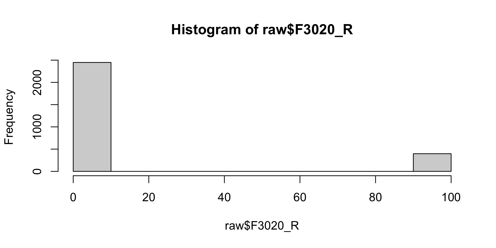

saveRDS(swe, file = "data/swe.rds")
swe <- readRDS("data/swe.rds")2 Data and data management I
This session and the next are about turning a survey file into something you can analyse. That sounds like a chore, and it is the part of the work that textbooks skip. It is also where most of the time goes and where most of the mistakes are made. The analysis itself is usually one or two lines. Everything else is preparation.
This week we do it with base R — the functions that come with R itself. Next week we do the same job with the tidyverse, which is shorter to write. Learning base R first is not a detour: it is what everything else is built on, it is what you will find in older code and in help pages, and it makes clear what the tidyverse is doing for you.
2.1 The data
We use the Swedish study from CSES Module 6, the survey run after the September 2022 general election. The front page of these materials describes it and tells you how to cite it.
There are two files, and the difference matters.
cses6_swe_raw.csv— the survey as it comes. Variable names are CSES codes likeF3020_R, and refusals and non-answers are coded as numbers, not as missing.swe.rds— the cleaned version we use from session 4 onwards.
This week and next we work on the first one and build the second. Download cses6_swe_raw.csv from Moodle and put it in the data folder of your course project.
2.2 Getting the data in
2.2.1 R’s own format
R has its own file format, with the extension .rds. It is the most convenient option when you are moving data between your own R sessions, because it stores the object exactly as it was — factors stay factors, and nothing has to be guessed on the way back in.
saveRDS() writes one, and readRDS() reads it. The first argument is the object, and file is where to put it.
Note the pattern on the way back in: readRDS() gives you the object and you have to assign it to a name yourself.
2.2.2 CSV files
The format that works between all software is comma separated values, .csv. It is a plain text file: one line per row, and values within a row separated by commas. You can open one in a text editor and read it, which is exactly why it survives.
read.csv() reads one.
raw <- read.csv("data/cses6_swe_raw.csv")Three arguments are worth knowing about even though the defaults are usually right.
sepis the character that separates values. The default is a comma. Some countries use a comma as the decimal separator and then a semicolon for the fields, in which case you needsep = ";".headersays whether the first row holds variable names. The default isTRUE.stringsAsFactorssays whether text columns should be turned into factors. Since R 4.0 the default isFALSE, which is what you want. Older code often sets it explicitly, because the default used to be the other way round and it caused a great deal of trouble.
Writing one back out is write.csv(). The row.names argument controls whether the row numbers become a first column; you almost always want FALSE, otherwise every save adds another column of numbers.
write.csv(raw, file = "data/my_data.csv", row.names = FALSE)2.2.3 SPSS files
A lot of survey data arrives as SPSS .sav. The haven package reads it.
library(haven)
raw_spss <- read_sav("data/cses6_swe_raw.sav")SPSS files carry labels: text descriptions attached to the variables and to individual values. haven keeps them, which means the columns come back with a type you have not seen before.
class(raw_spss$F3020_R)## [1] "numeric"A haven_labelled vector is a set of numbers with a dictionary attached. That is useful for reading and awkward for computing: some functions will refuse to work with it, and others will quietly do something odd.
attr(raw_spss$F3020_R, "label")## [1] "Left-right: self"attr() retrieves an attribute — a piece of information attached to an object without being part of its values. The second argument is which attribute you want.
When you want the numbers and nothing else, zap_labels() strips the labels off.
lr <- zap_labels(raw_spss$F3020_R)
class(lr)## [1] "numeric"Two functions with similar names do different things, and it is worth keeping them straight.
read_sav()fromhavenkeeps the labels.read.spss()from the olderforeignpackage does not, and is fussier. Usehaven.
For the rest of this chapter we work with the CSV version, raw, which is plain numbers throughout.
2.3 A first look
Never start analysing a data set you have not looked at. Four functions, in the order you should use them.
dim() gives the size, rows first and columns second.
dim(raw)## [1] 2845 84So 2845 respondents and 84 variables.
names() lists the column names.
names(raw)[1:12]## [1] "F1003_2" "F1004" "F1006_NAM" "F1101_2" "F2001_A" "F2002"
## [7] "F2003" "F2004" "F2005" "F2006" "F2008" "F2009"The [1:12] at the end shows only the first twelve, because all 84 at once is a wall of text. 1:12 builds the sequence of whole numbers from 1 to 12, and the square brackets take those positions.
head() shows the first few rows. Its second argument, n, says how many; the default is 6.
head(raw[, c("F2001_A", "F2002", "F3020_R")], n = 4)## F2001_A F2002 F3020_R
## 1 50 0 3
## 2 31 0 7
## 3 40 0 6
## 4 51 0 6Here the square brackets do two things at once. The row position before the comma is empty, so all rows. The column position after the comma is a vector of three names built with c(), so those three columns. The result is a small data frame with everything else left out — which is how you look at a wide data set without drowning.
summary() gives a numerical summary of every column.
summary(raw[, c("F2001_A", "F3020_R", "F3007_1")])## F2001_A F3020_R F3007_1
## Min. : 18.00 Min. : 0.00 Min. :1.000
## 1st Qu.: 42.00 1st Qu.: 3.00 1st Qu.:2.000
## Median : 58.00 Median : 6.00 Median :2.000
## Mean : 56.13 Mean :18.32 Mean :2.321
## 3rd Qu.: 71.00 3rd Qu.: 8.00 3rd Qu.:3.000
## Max. :102.00 Max. :99.00 Max. :9.000Now look at that output properly, because two of those three columns are lying to you.
F2001_A is age in years, F3020_R is a left–right self-placement running from 0 to 10, and F3007_1 is trust in parliament running from 1 to 4.
A question. Three things in that output deserve a second look.
- The oldest respondent is 102.
- Trust in parliament, on a four-point scale, has a maximum of 9.
- Left–right self-placement, on a scale from 0 to 10, has a mean of 18.32.
One of these is fine. Two of them are impossible. Which is which, and how do you know without looking anything up?
The third one is the sharpest: a mean can never fall outside the range of the values it is a mean of. What must therefore be true about the values?
That last point is worth holding on to. We did not need the codebook, or the data, to know that something was wrong — only the limits of the scale. Which brings us to the next section.
2.4 What a number stands for
Before going further it is worth being explicit about something that gets skipped. A variable in a data set is a column of numbers. But the numbers are not the point — they stand for something, and what they stand for decides what you are allowed to do with them.
2.4.1 Scales of measurement
The standard division:
- Categorical
- Binary — two categories. Voted or did not.
- Nominal — unordered categories. Which party you voted for.
- Ordinal — ordered categories, but the gaps between them are not necessarily equal. “Trust a lot / somewhat / not very much / not at all.”
- Continuous
- Interval — equal gaps all along the scale, but the zero point is arbitrary. Temperature in Celsius.
- Ratio — equal gaps and a real zero, so ratios mean something. Age, income, number of seats.
The practical importance is that the scale decides the method. A mean of a nominal variable is nonsense — the average of “Green party” and “Moderates” does not exist, no matter that both are stored as numbers.
The rule we use in this course. An ordinal variable with five or more categories, numbered at equal intervals, may be treated as continuous. With four or fewer, it may not.
This is a convention rather than a law, and it is not universally agreed. But it is applied consistently throughout these materials, and where an exception is made it is stated and argued for.
2.4.2 Limits
Here is the part that is usually left out, and it is the part that will matter most later.
Every scale has limits, and knowing them is not a technicality — it is most of what you know about a variable before you have looked at any data.
Some limits are hard. They cannot be crossed, because of what the thing is:
- A share cannot be below 0% or above 100%.
- A count cannot be negative.
- A left–right self-placement on a 0-to-10 scale cannot be 11.
- A probability lies between 0 and 1.
Some limits are soft. They can in principle be crossed, but effectively are not:
- Human age has a hard floor at 0 and a soft ceiling somewhere above 110.
- The number of parties winning seats in a district has a hard floor of 1 and a soft ceiling at the number of seats available.
Two things follow, and we use both.
First, limits let you check your work. If a calculation gives a share of 140%, or a probability of −0.2, you do not need to check the data to know something is wrong. The result left the region where answers can exist. We come back to this at the end of the chapter, and every time we compute anything from here on.
Second, limits are the beginning of a model. If you know that a relationship must pass through the point where both variables are zero, and that neither can exceed 100, you already know a great deal about what shape it can have — before collecting a single observation. That is the subject of session 5, and it is worth knowing now that the groundwork is being laid here.
A question. For each of these, what are the limits, and are they hard or soft? > > - The percentage of women in a parliament. > - The difference between how much you like one party and how much you like another, when both are rated 0 to 10. > - The number of days per week someone reads the news. > - Turnout in an election.
2.5 Looking at one variable
For a categorical variable, table() counts how many cases fall in each category.
table(raw$F3001)##
## 1 2 3 4 9
## 445 1421 823 90 66F3001 is political interest, and the CSES codebook says it runs 1 = very interested to 4 = not at all interested, with 9 for missing. You can see all five values here, and the 9s are not a fifth level of interest.
table() ignores NA by default. To make it show them, use the useNA argument:
table(raw$F3001, useNA = "ifany")##
## 1 2 3 4 9
## 445 1421 823 90 66"ifany" shows a missing-value column only when there are some. There are none here, and that is exactly the problem: the missing values are still coded as 9.
For a continuous variable, the individual functions are named as you would expect.
mean(raw$F3020_R)## [1] 18.32056median(raw$F3020_R)## [1] 6sd(raw$F3020_R)## [1] 32.59899sd() is the standard deviation. All three of these numbers are wrong, for the same reason as before.
hist() draws a quick histogram. It is not pretty — session 4 is about making plots properly — but it is one word and it shows you the shape.
hist(raw$F3020_R)
The bar at the far right is not a group of extremely right-wing respondents. It is everybody who did not answer.
2.6 Missing values
In R a missing value is NA. In a survey file downloaded from an archive, missing values are usually numbers — and that is the single most dangerous thing about survey data, because nothing warns you.
CSES uses a consistent scheme. On a scale that runs 1 to 4, the codes are 7 for refused, 8 for don’t know, 9 for missing. On a scale that runs 0 to 10, they are 97, 98 and 99. On a variable holding a country code, 997, 998 and 999.
Left in place, they are treated as real answers. A mean of political interest that includes a handful of 9s on a 1-to-4 scale is not slightly wrong; it is wrong in a way that no amount of later care will fix.
2.6.1 Setting them to NA
The tool is the same square-bracket selection you already know, used on the left of an assignment.
polint <- raw$F3001
polint[polint %in% c(7, 8, 9)] <- NARead that middle line from the inside out. polint %in% c(7, 8, 9) asks, for every element of polint, whether it appears in the vector c(7, 8, 9), and gives back TRUE or FALSE for each. Putting that inside square brackets selects the elements where the answer was TRUE. Assigning NA to that selection replaces exactly those.
%in% is worth knowing well. Without it you would write polint == 7 | polint == 8 | polint == 9, which does the same thing at three times the length.
Now the table looks sensible:
table(polint, useNA = "ifany")## polint
## 1 2 3 4 <NA>
## 445 1421 823 90 66And so does the mean:
mean(polint, na.rm = TRUE)## [1] 2.200792Strictly, political interest has four categories, and the rule two sections above says four is not enough to treat as continuous — so this mean is a breach of it. It is used here only to show what the missing codes were doing to the arithmetic, not as a finding about Swedish political interest. Where the materials break a rule they have stated, they will say so; where they do it silently, tell me.
A question. Before we set the missing codes, mean(raw$F3001) was 2.36. After, it is 2.2.
The scale runs from 1 to 4. Was the first number obviously wrong just by looking at it? What does that tell you about relying on a number looking reasonable?
2.6.2 How much is missing
Count missing values by testing with is.na() and adding up the TRUEs.
sum(is.na(polint))## [1] 66As a proportion, mean() of a TRUE/FALSE vector gives the share that are TRUE:
mean(is.na(polint))## [1] 0.02319859So about 2.3% missing, which is fine.
complete.cases() tests whole rows, giving TRUE for a row with no missing values anywhere in it. Try it on three of the original columns:
some_vars <- raw[, c("F3001", "F3020_R", "F2001_A")]
sum(complete.cases(some_vars))## [1] 2845Every single row is complete — all 2 845 of them. That is not good news. It is complete.cases() telling the truth about a data frame in which the missing values have not yet been marked as missing. There is nothing for it to find, because the gaps are still disguised as the numbers 9 and 99.
Clean the three variables first and ask again:
clean_vars <- data.frame(
polint = polint,
lr = raw$F3020_R,
age = raw$F2001_A
)
clean_vars$lr[clean_vars$lr %in% c(95, 97, 98, 99)] <- NA
sum(complete.cases(clean_vars))## [1] 2401444 respondents have a gap on at least one of these three variables. That is the number that was there all along.
Watch this number as you add variables to a model. Every variable you add drops every respondent who is missing on it, and the losses compound. A model with ten variables can quietly be fitted on half your sample — and it will not tell you unless you ask.
2.7 Selecting rows and columns
You already know the basic form: [rows, columns].
By position:
raw[3, 1:3]## F1003_2 F1004 F1006_NAM
## 3 2341 SWE_2022 SwedenBy name, which is safer, because inserting a column shifts every number:
head(raw[, c("F2002", "F2003")], n = 3)## F2002 F2003
## 1 0 8
## 2 0 7
## 3 0 6The useful case is selecting rows by condition. A comparison on a column gives a TRUE/FALSE vector as long as the data frame, and putting that in the row position keeps the TRUE rows.
young <- raw[raw$F2001_A < 30, ]
dim(young)## [1] 274 84Conditions combine with & for “and” and | for “or”.
young_women <- raw[raw$F2001_A < 30 & raw$F2002 == 1, ]
dim(young_women)## [1] 157 84A trap. Selecting rows this way keeps rows where the condition is
NA, and fills them withNA. IfF2001_Ahad missing values coded asNA,raw[raw$F2001_A < 30, ]would give you the young respondents plus a row ofNAs for every respondent whose age is unknown — because R does not know whether an unknown age is under 30, so it will not say either way.The fix is
which(), which converts aTRUE/FALSEvector into the positions of theTRUEs, dropping theNAs:
raw[which(raw$F2001_A < 30), ]Use
which()whenever the variable you are testing might have missing values. Next week’sfilter()handles this for you, which is one of several reasons to prefer it.
2.8 Recoding
Recoding means making a new variable out of an existing one. Three cases cover almost everything.
Never overwrite the original. Make a new variable. When the recode turns out to be wrong — and it will, at least once — you need the original to go back to. This is also why all of this belongs in a script rather than being done by hand.
2.8.1 Reversing a scale
CSES codes political interest with 1 as most interested. That is backwards for reading results: in a regression, a positive coefficient would mean less interest. Reversing it costs one line.
polint_rev <- 5 - polint
table(polint_rev, useNA = "ifany")## polint_rev
## 1 2 3 4 <NA>
## 90 823 1421 445 66Why 5? For a scale running from lo to hi, the reversed value is (hi + lo) - x. Here that is 4 + 1 = 5. Check it against the table: the 1s and the 4s have swapped, and so have the 2s and 3s, and the total count is unchanged.
That last sentence is the important habit. A recode is a claim, and a claim can be checked. Comparing the before and after tables takes five seconds and catches the error that would otherwise survive into your results.
2.8.2 Grouping a continuous variable
Suppose we want age in three groups. Start by creating a variable that is entirely missing, then fill it in.
age <- raw$F2001_A
age[age %in% c(9997, 9998, 9999)] <- NA
range(age, na.rm = TRUE)## [1] 18 102As it happens the Swedish study has no missing ages at all, so that second line changed nothing — the range runs from 18 to 102. Write it anyway. You do not know a variable has no missing codes until you have checked, and a line that does nothing costs nothing.
The oldest respondent being 102 is the answer to part of the earlier question: age has a hard floor and only a soft ceiling, and 102 is on the right side of it. Unusual is not the same as impossible.
agegroup <- rep(NA, length(age))
agegroup[which(age < 35)] <- "Under 35"
agegroup[which(age >= 35 & age < 65)] <- "35 to 64"
agegroup[which(age >= 65)] <- "65 and over"rep() repeats a value; here it makes a vector of NA the same length as age. length() gives the number of elements.
Starting from all-missing is deliberate. Anything the conditions fail to cover stays NA rather than silently taking a wrong value — so if the conditions have a gap, you find out.
Note which() again, for the reason given above: age has missing values.
table(agegroup, useNA = "ifany")## agegroup
## 35 to 64 65 and over Under 35
## 1332 1066 447The counts add up to 2 845, which is every respondent, and no category is empty. Had a respondent fallen through the conditions — an age of exactly 35 slipping between two of them, say — they would be sitting in an NA column here, and the total would still add up. That is the check, and it is why we started from all-missing rather than from a default value.
2.8.3 Putting categories in order
There is a problem with that table: the categories are in alphabetical order, so “65 and over” comes before “Under 35”. Alphabetical order is not the order of the variable.
Text becomes an ordered categorical variable when you make it a factor and say what the order is.
agegroup <- factor(
agegroup,
levels = c("Under 35", "35 to 64", "65 and over")
)
table(agegroup, useNA = "ifany")## agegroup
## Under 35 35 to 64 65 and over
## 447 1332 1066levels gives the categories in the order you want them. From here on, every table and every plot will use that order.
levelsalso decides which category is the reference when a factor goes into a regression — the one the others get compared to. That is session 13, but the choice is made here.
2.8.4 Collapsing categories
Merging categories works the same way, with == instead of a range.
interest2 <- rep(NA, length(polint_rev))
interest2[which(polint_rev %in% c(1, 2))] <- "Not interested"
interest2[which(polint_rev %in% c(3, 4))] <- "Interested"
interest2 <- factor(
interest2,
levels = c("Not interested", "Interested")
)And the check, which for a collapse is a cross-table of old against new:
table(interest2, polint_rev, useNA = "ifany")## polint_rev
## interest2 1 2 3 4 <NA>
## Not interested 90 823 0 0 0
## Interested 0 0 1421 445 0
## <NA> 0 0 0 0 66Every column has its count in exactly one row, and the row it is in is the one intended. That is what a correct collapse looks like, and it takes one line to confirm.
2.9 Checking your work
This section is short and it is the most important one in the chapter.
Every variable has limits. After a recode, the values must still be inside them. Checking this by eye works until you have sixty variables, at which point it stops working and you do not notice.
So check by machine. range() gives the smallest and largest value; na.rm = TRUE is needed or a single NA makes both of them NA.
range(polint_rev, na.rm = TRUE)## [1] 1 4Better still, make the check fail loudly. stopifnot() takes one or more conditions and does nothing at all if they are all TRUE — but stops with an error if any is FALSE.
stopifnot(
min(polint_rev, na.rm = TRUE) >= 1,
max(polint_rev, na.rm = TRUE) <= 4
)Nothing printed, which means it passed. Had the recode been wrong, the script would have stopped there rather than carrying the mistake into a model output that looks perfectly plausible.
This is worth the small effort it costs. A wrong number that is obviously wrong is a nuisance. A wrong number that looks reasonable is a problem, because nothing will tell you. The limits of the scale are what let you tell the difference, and they are known before you start.
2.10 A trap worth meeting once
One more thing, because it costs hours when it happens and it gives no error message.
The Swedish county names contain å, ä and ö. Suppose the county names are read from one file, and somewhere in a script you write out "Götaland" to compare against them. Sometimes the comparison fails — even though the two strings look identical and contain exactly the same bytes.
The reason is that R records, alongside the text, which encoding it thinks the text is in. If one string is tagged as UTF-8 and the other is not, R can treat them as different. There is no error and no warning. The comparison simply returns FALSE, and every row that should have matched becomes NA.
This happened while preparing the data for this course, and it silently lost 1,357 of the 2,845 rows. The only visible symptom was a category with a count of zero.
Two habits prevent it:
- Where a set of category names exists in a file, take them from the file rather than typing them again in your script.
- Pin the encoding at the top of the script, so it does not depend on the machine:
Sys.setlocale("LC_CTYPE", "en_US.UTF-8")The general lesson is worth more than the specific fix. Errors that produce a message are cheap: you find them immediately. Errors that produce a wrong answer are expensive, and text comparison is one of the places they live.
In the seminar. swirl lesson 02 Data Management I. Reading the survey file, looking at it, dealing with the missing-value codes, subsetting and recoding. Around 30 minutes.